壁面との衝突を含む場合のボールの運動
𝒙𝑡
を計算したい。
弾性衝突による速度 ˙𝒙 の変化を知りたい
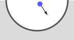
例えば、大きなお椀の中で跳ねるスーパーボールのような運動である。
衝突の瞬間以外は、これまでと同じ
壁がある場合であっても、壁と衝突する瞬間以外は、ボールは、重力などの力を受けて自由に運動する。この間は、第2章の場合そのものなので、ニュートンの運動方程式：
𝑚¨𝒙=𝒇(1)
によって計算できる。従って、新たに考える必要があるのは、衝突の瞬間の運動の変化のみである。
衝突直後の速度が分かればよい
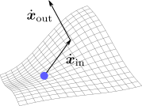
特に、反射速度
˙𝒙out
（＝衝突直後の速度、右図）が分かれば十分である。なぜなら、運動を一意的に決めるのに必要な初期値は、ボールの位置・速度だけであるためである（第1章の1.1節）。衝突位置は分かっているので、衝突直後の速度が分かれば、それらを初期値としてその後の運動が決まる。
最もよく弾む場合を考える：弾性衝突
ただし、ボールの弾み方はボールや壁の素材によって異なり、よく跳ねる場合もあればそうでない場合もある。そのため、「弾みやすさ」を決めてやらないとと反射速度
˙𝒙out
は決まらないはずである。ここでは、最もよく弾む理想的な場合を考えることにする。これを弾性衝突という（右図）。弾性衝突という理想的な極限が存在することは直感的にわかるだろう。例えば、床にボールをそっと落とした時、元の高さまで戻ってくるのが弾性衝突である。「衝突の前後で速度の大きさが変化しない」と言い換えても良い。
反射速度は幾何学的に分かる
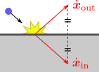
弾性衝突での速度の変化は、直感的に分かる。即ち、右図のように、反射速度
˙𝒙out
は、入射速度
˙𝒙in
（＝衝突直前の速度）に対して「壁と垂直な方向の成分を反転したもの」になる。実験的にも正しいことが確認できているとする。従って、これを式で表せば、弾性衝突の公式が得られる。衝突時には速度が瞬間的に変化するので、（速度の変化率である）加速度
¨𝒙
は定義できない（無限大になる）。そのため、衝突の瞬間はニュートンの運動方程式(1)が使えず、上述のような幾何学的な戦略が必要となるのである。
この章の方針
以上で、弾性衝突の公式を得る手順が分かった。ただし、実際に運動を計算するには、壁の形状を数学的に定式化する方法も必要である。これらを踏まえてこの章では、以下の3つの節に分けて、ボールの運動
𝒙𝑡
を求める方法を議論する：4.1弾性衝突公式の導出4.2壁の定式化4.3ボールの運動 𝒙𝑡 の計算
4.1弾性衝突公式の導出
この節では、まず幾何学的な考察により、反射速度
˙𝒙out
を与える弾性衝突公式(3)を導く。その後、力学的な考察から得られる「ダランベールの原理(7)と弾性衝突条件(8)」を用いて同じ公式を再導出する。
4.1.1反射速度 ˙𝒙out を与える弾性衝突公式：式(3)
冒頭でも述べたように、弾性衝突後の速度
˙𝒙out
のうち、「床と平行な成分」は衝突前と変わらず、「床と垂直な成分」は反転する。現実的には、平行成分も摩擦の影響で多少変化するが、これも無視できるとする。
入射速度の成分を分解して表す：式(2)
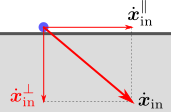
数値計算を行う溜めには、これを数式で表す必要がある。そのためには、まず、右図のように、入射時の速度
˙𝒙in
を、「床や壁に対して平行な成分
˙𝒙∥in
」と「垂直な成分
˙𝒙⟂in
」に分解すればよい：
˙𝒙in=˙𝒙∥in+˙𝒙⟂in
そうすれば、衝突により垂直成分
˙𝒙⟂in
が反転するのだから、反射速度
˙𝒙out
は
˙𝒙out=˙𝒙∥in−˙𝒙⟂in(2)
となる。非弾性衝突の場合は、
˙𝒙⟂in
に
1
より小さい係数をかけることで表すことができる。
壁の向きは単位法線ベクトルで表す
式(2)の右辺の各項
˙𝒙∥in,˙𝒙⟂in
は、壁面の向きが与えられれば書き下せるはずである。壁面の向きを定義する量として、壁に垂直な単位ベクトル
ˆ𝒏
（＝単位法線ベクトル）を採用しよう。ハット記号
ˆ𝒏
は単位ベクトルであることを表す。
壁と垂直なベクトル ˆ𝒏 を使った弾性衝突公式：式(3)
壁の向き
ˆ𝒏
を使って
˙𝒙in
から
˙𝒙∥in,˙𝒙⟂in
を書き下すのは、単に幾何学の問題である。そのためには、直交射影行列
𝑃∥,𝑃⟂
を使えばよい：
˙𝒙∥in=𝑃∥˙𝒙in,𝑃∥=（壁面への直交射影行列）˙𝒙⟂in=𝑃⟂˙𝒙in𝑃⟂=（壁面に垂直な方向への直交射影行列）
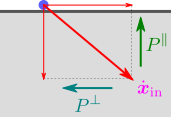
𝑃∥,𝑃⟂
の定義は以下の【4.1-注1】の式(5)。図示すると右図のようになる。これらを式(2)の右辺に代入すれば、弾性衝突公式が得られる：
˙𝒙out=(𝑃∥−𝑃⟂)˙𝒙in∣式(5)=(1−2ˆ𝒏ˆ𝒏T)˙𝒙in(3)
後は、衝突点での壁面の向き
ˆ𝒏
を求めることさえできれば、上式(3)が確定し、
˙𝒙out
が計算できることになる。壁の形状から
ˆ𝒏
を求める方法については、次の4.2節で議論する。
【4.1-注1】3次元の直交射影行列：式(5)
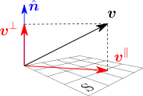
右図のように、任意のベクトル
𝒗
を、ある平面
𝑆
に対して「平行な成分
𝒗∥
」と「垂直な成分
𝒗⟂
」の和に分解する：
𝒗=𝒗∥+𝒗⟂
この時、各成分
𝒗∥,𝒗⟂
は、
𝑆
と垂直な単位法線ベクトル
ˆ𝒏
を用いて、それぞれ以下のように書ける：
𝒗∥=(1−ˆ𝒏ˆ𝒏T)⏟__⏟__⏟≡𝑃∥𝒗,𝒗⟂=(ˆ𝒏ˆ𝒏T)⏟≡𝑃⟂𝒗(4)
1
は単位行列、
ˆ𝒏ˆ𝒏T
は以下の【4.1-注2】の外積である。式(4)の図解
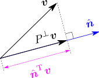
まず、右式は
𝒗⟂=(ˆ𝒏T𝒗)ˆ𝒏
と変形できるので、
ˆ𝒏
方向の成分になることが、内積の性質にから分かる（右図）。同左式については、
𝒗∥=𝒗−𝒗⟂
と書けるので、
ˆ𝒏
ではない方向の成分になる。
直交射影行列
上式(4)に現れた行列
𝑃∥,𝑃⟂
のことを、直交射影行列という：
𝑃∥=1−ˆ𝒏ˆ𝒏T,𝑃⟂=ˆ𝒏ˆ𝒏T(5)
例
例 𝑥-𝑦 平面の場合
直交射影行列(5)の例として、平面
𝑆
が
𝑥-𝑦
平面である場合を考える。単位法線ベクトルは
ˆ𝒏=[001]T
とすればよいので、式(5)は以下のようになる：
𝑃∥=⎡⎢
⎢⎣100010000⎤⎥
⎥⎦,𝑃⟂=⎡⎢
⎢⎣000000001⎤⎥
⎥⎦
-
𝑃∥
は、平面
𝑆
、即ち、
𝑥-𝑦
平面への直交射影行列（＝
𝑥,𝑦
成分のみを取り出す行列）となっている。
-
𝑃⟂
は、平面
𝑆
に垂直な空間、即ち、
𝑧
軸への直交射影行列（＝
𝑧
成分のみを取り出す行列）となっている。
【4.1-注2】内積と外積
外積
2つのベクトル
𝒂,𝒃
に対し、
𝒂𝒃T
は行列の積として問題なく定義できる：（
𝒃T
は
𝒃
の転置）
𝒂𝒃T=⎡⎢
⎢⎣𝑎𝑥𝑎𝑦𝑎𝑧⎤⎥
⎥⎦[𝑏𝑥𝑏𝑦𝑏𝑧]=⎡⎢
⎢⎣𝑎𝑥𝑏𝑥𝑎𝑥𝑏𝑦𝑎𝑥𝑏𝑧𝑎𝑦𝑏𝑥𝑎𝑦𝑏𝑦𝑎𝑦𝑏𝑧𝑎𝑧𝑏𝑥𝑎𝑧𝑏𝑦𝑎𝑧𝑏𝑧⎤⎥
⎥⎦(6)
転置記号
T
が外側にあるので、これを外積（outer product）という。
内積
逆に、
T
が内側にある
𝒂T𝒃
を考えることもでき、内積（inner product）という：
𝒂T𝒃=[𝑎𝑥𝑎𝑦𝑎𝑧]⎡⎢
⎢⎣𝑏𝑥𝑏𝑦𝑏𝑧⎤⎥
⎥⎦=𝑎𝑥𝑏𝑥+𝑎𝑦𝑏𝑦+𝑎𝑧𝑏𝑧
補足
表記・呼称について
内積は、
𝒂⋅𝒃
と表されることもあるが、本サイトでは使わない（「
⋅
」記号を使うのは、実数や行列などの積を区切る際のみ）。また、第10章で導入するベクトルのクロス積
𝒂×𝒃
のことを外積と呼ぶことがあるが、全く別物である。
4.1.2参考弾性衝突の力学的条件：ダランベールの原理(7)と弾性衝突条件(8)
弾性衝突公式(3)の導出は幾何学的に考えることで達成したが。ここでは、これを力学的に解釈することを考える。
衝突の瞬間には、加速度が定義できない
衝突の場合、冒頭でも述べたように、速度が瞬間的に変化するので、速度の1次近似から得られる加速度は定義できないし、衝突時の力を完全に決定することも容易ではない。そのため、速度の変化を求めるにあたって、加速度を含んでいる運動方程式を直接使うことができない。衝突の瞬間、ボールは圧縮され、元に戻ろうとする力で跳ね返る。本来であれば、これらを解析することでその運動を求めるのが筋である。しかし、このような細かい現象に着目せずとも、「弾性衝突である」といった条件を課すだけで衝突運動が扱える、というのが上述のとおり経験的な事実である。
衝突時の力の方向は壁に垂直：式(7)
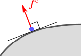
ボールが壁に衝突した時、ボールには、壁にめり込むのを防ぐために働く拘束力が働く。この拘束力を
𝒇c
をおく。添え字
c
は、拘束を意味する constraint の頭文字。
𝒇c
の向きは、直感的に壁に垂直となりそうである（右図）。実際、衝突での速度変化が「壁に垂直な成分」のみであることと、「速度が変化する方向と
𝒇c
の向きは一致する（∵運動方程式）」ことからも、もっともらしい。なお、摩擦の影響は考えていない。これを式で書くと、未知の係数
𝜆
を用いて、以下のようになる：
𝒇c=𝜆ˆ𝒏(7)
この関係式は確かに成立することが知られており、ダランベールの原理と呼ばれる。係数
𝜆
は、衝突の瞬間の短い間に急激に変化するため、求めることは難しい。第8章で述べるが、ダランベールの原理はもっと一般的に成り立つ。
弾性衝突に固有の条件：式(8)
ダランベールの原理(7)は、壁に接触していさえすれば、弾性衝突でなくても成り立つので、これとは別に、弾性衝突であるための条件があるはずである。その条件は、「衝突によってボールの運動の勢いが減衰しない」という条件になるはずなので、速度の大きさが不変であればよい：
|˙𝒙out|=|˙𝒙in|(8)
これを弾性衝突条件という。
弾性衝突公式(3)の再導出
弾性衝突公式(3)を導くには、上記のダランベールの原理(7)と弾性衝突条件(8)があれば十分である（以下の【4.1-注3】）。
【4.1-注3】弾性衝突公式(3)の力学的導出
弾性衝突公式(3)は、ダランベールの原理(7)と弾性衝突条件(8)から導くことができる。
導出
ダランベールの原理を使う
まず、ダランベールの原理(7)を、衝突前後の速度
˙𝒙in,˙𝒙out
に対する関係式にしたい。ダランベールの原理により、拘束力の向きは壁に垂直なので、速度の変化も壁に垂直である。よって、以下の関係式が成り立つ：（
Λ
は未知数）
˙𝒙out=˙𝒙in+Λˆ𝒏(9)
実際には重力
𝒇g
の影響も含まれるが、衝突時間
𝛿𝑡
が非常に小さいため、重力による速度の変化
𝛿˙𝒙≐1𝑚𝒇g⋅𝛿𝑡
は無視できる。
弾性衝突条件を使う
後は、未知数
Λ
を求めればよいわけだが、そのためには弾性衝突条件(8)（を2乗したもの）：
˙𝒙Tout˙𝒙out=˙𝒙Tin˙𝒙in(10)
を用いればよい。具体的には、式(9)を式(10)に代入して
˙𝒙out
を消去すればよい。すると
Λ
の単純な2次方程式になり、その解は以下の2つである：
Λ={0−2ˆ𝒏T˙𝒙in
Λ≠0 の解が正しい
Λ=0
だとすると、速度が変化しないため、壁にめり込んで拘束条件を破ってしまう。よって、もう一方が正しい解である。この
Λ
を式(9)に代入すると、
˙𝒙out
が確定し、幾何学的に求めた式(3)に一致する。
◼
4.2壁の定式化
前節で弾性衝突公式(3)が得られたが、法線ベクトル
ˆ𝒏
を決める方法がまだであった。この節では、「壁の形状から
ˆ𝒏
を求める方法について考える。結論から言うと、壁の形状が不等式(11)の形で与えられている場合、
ˆ𝒏
を求める公式は式(13)である。これにより、最終的な弾性衝突公式(18)が得られる。
4.2.1拘束条件(11)によって壁の形状を表す
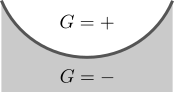
壁面の法線ベクトル
ˆ𝒏
を求めたいのだが、これを計算するには、もちろん「壁の形状」が予め与えられている必要がある。
壁の形状の表し方：式(11)
そのために、壁の形状を、関数
𝐺(𝒙)
で表すことにする。
𝐺(𝒙)
は、ボールの位置
𝒙
が壁の外にある時に正の値を取り、壁の内部で負の値を取る（右図）。つまり、
𝒙
は、不等式
𝐺(𝒙)≥0(11)
を満たす点のみを取ることができ、その他の点が壁になる。この不等式、または
𝐺
そのものを拘束条件と呼ぶ。
例球の内部の場合
例えば、半径
𝑅
の球の内部にボールを閉じ込める場合、ボール位置
𝒙
が取り得る範囲は
|𝒙|≤𝑅
で表されるので、拘束条件は
𝐺(𝒙)≡𝑅−|𝒙|≥0(12)
とすればよい。ただし、
𝐺
の取り方には任意性があり、例えば
𝐺≡𝑅2−|𝒙|2
などとしてもよい。記号
≡
記号
≡
は以前にも登場しているが、定義または恒等式であることを表すものである。特に、方程式でないことを強調する。例えば式(12)の左側は拘束条件
𝐺
の定義であり、
𝒙
に対する方程式ではない（一方、右側の不等式は
𝒙
に対する方程式である）。ただし、自明な場合には、定義や恒等式であっても
=
と書く。（本サイトでは使わないが、定義を
:=
で表す記法もある。例えば、
𝐺(𝒙):=𝑅−|𝒙|
。）
4.2.2壁面に垂直なベクトル 𝒏 ：式(13)
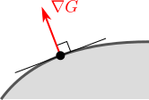
後は、拘束条件
𝐺(𝒙)
から、壁面の法線ベクトル
𝒏
を求めればよい。これは純粋に幾何学的な問題であり、以下で与えられる（右図）：
𝒏=∇𝐺≡⎡⎢
⎢⎣𝜕𝑥𝐺𝜕𝑦𝐺𝜕𝑧𝐺⎤⎥
⎥⎦
導出は以下の【4.2-注1】。
∇𝐺
は、
𝐺
が大きくなる方向、即ち、壁と反対側を向く。
拘束条件から壁の法線ベクトルを求める：式(13)
この
𝒏
を単位ベクトルにすれば、求めたかった
ˆ𝒏
になる：
ˆ𝒏=ˆ∇𝐺(≡∇𝐺|∇𝐺|)(13)
∇𝐺
の正規化は、
ˆ∇𝐺
のように、
∇
だけにハット記号を付けることで表している。
注意 ∇𝐺≠𝟎 を満たさなければならない
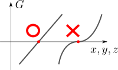
ところで、
∇𝐺
は
𝟎
になる場合がある。こうなると式(13)が定義できない。そうならないよう、式(12)で述べた
𝐺
の任意性を使って、
∇𝐺≠𝟎
が成り立つようにしておく必要がある。右図のように、
𝑥,𝑦,𝑧
で微分したときに「全ての傾きがゼロ」にならないようにすればよい。
∇𝐺=𝟎
となってしまう例として、任意の拘束条件
𝐺
に対し、新しい拘束条件
˜𝐺≡𝐺3
を考えてみる。
˜𝐺
は、元の壁の内部で負、外部で正となっているので
𝐺
と同じ拘束条件を与えるが、壁面上で
∇˜𝐺=3𝐺2∇𝐺=𝟎
となってしまう（最初の変形には次章【5.1-注3】の連鎖律を使う）。
【4.2-注1】曲面に垂直なベクトル
ある曲面が
𝐺(𝒙)=0
によって表されているとする。この時、曲面上の点
𝒙
における以下のベクトル
∇𝐺
：
∇𝐺≡⎡⎢
⎢⎣𝜕𝑥𝐺𝜕𝑦𝐺𝜕𝑧𝐺⎤⎥
⎥⎦(14)
は、
∇𝐺≠𝟎
であれば、曲面に垂直である。特に、
𝐺
が大きくなる方向を向く。
∇
はナブラと読む。
𝜕𝑥𝐺
は
𝜕𝐺𝜕𝑥
（以下の【4.2-注2】参照）の略記である。全微分(16)との関係式は
∇𝐺=𝑑𝐺𝑑𝒙T
である（
T
は行と列を入れ替える転置記号）。
導出
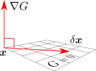
右図のように、2点
𝒙,𝒙+𝛿𝒙
が曲面上にあるとする（両方とも
𝐺=0
を満たす）。
𝐺(𝒙+𝛿𝒙) を1次近似する
𝛿𝒙
を十分小さく取っておき、
𝐺(𝒙+𝛿𝒙)
を1次近似すると、以下の【4.2-注2】の式(15)により、以下のようになる：（最初の式の左辺以外は
𝒙
での値）
𝐺(𝒙+𝛿𝒙)⏟__⏟__⏟0≐𝐺⏟0+𝑑𝐺𝑑𝒙𝛿𝒙∴𝑑𝐺𝑑𝒙𝛿𝒙≐0∣
∣
∣
∣∇𝐺≡𝑑𝐺𝑑𝒙Tを定義∇𝐺T𝛿𝒙≐0
この式が「曲面上の任意の微小量」
𝛿𝒙
に対して成り立つので、
∇𝐺
は、曲面と垂直であるか、あるいは
𝟎
である。
∇𝐺 は 𝐺 の増加方向を向く
∇𝐺(≠𝟎)
の向きが
𝐺
の増加方向を向くことを示すには、
𝛿𝒙
を、（曲面上ではなく）
𝐺
の増加方向に取ってみればよい。この時の
𝐺
の変化
𝛿𝐺>0
は
𝛿𝐺≐(∇𝐺)T𝛿𝒙>0
となる。よって、内積の性質により、
∇𝐺
と
𝛿𝒙
は同じ側を向くことが分かる。
◼
【4.2-注2】多変数関数の1次近似：式(15)
右図のように、2変数
𝒙=(𝑥,𝑦)
の任意の関数
𝐺(𝒙)
のグラフを考える。このグラフ上の任意の1点
𝒙
の近傍を拡大していくと、右図のように次第に平面（＝接平面という）に近づいていく。これは例えば、地球の表面は球面であるにもかかわらず、地上の我々からは平面に見えることからも分かる。
多変数関数の1次近似：式(15)
平面のグラフは一般に1次関数（
𝑧=𝑎+𝑏𝑥+𝑐𝑦
）で表せるので、
𝒙
の近傍の値
𝐺(𝒙+𝛿𝒙)
も、微小なベクトル
𝛿𝒙
の1次関数で近似できる：（右辺の各項は点
𝒙
での値）
𝐺(𝒙+𝛿𝒙)≐𝐺+𝜕𝐺𝜕𝑥𝛿𝑥+𝜕𝐺𝜕𝑦𝛿𝑦=𝐺+𝑑𝐺𝑑𝒙𝛿𝒙𝑑𝐺𝑑𝒙≡[𝜕𝐺𝜕𝑥𝜕𝐺𝜕𝑦](15)(16)
𝑑𝐺𝑑𝒙
を全微分（文脈から誤解がなければ単に微分）といい、その成分
𝜕𝐺𝜕𝑥,𝜕𝐺𝜕𝑦
を偏微分という。偏微分は、対象となっている変数以外を定数と見なしたときの微分である。例えば、
𝜕𝐺𝜕𝑥
であれば、
𝑦
を定数と見て
𝑥
で微分したものになる。偏微分であること明示するために、
𝑑
を丸めた
𝜕
という記号を使うのが習慣である。（
𝜕
の読み方は色々あるが、partial d と読むのが分かりやすいだろう）
より扱いやすい表記法：式(17)
式(15)は、
𝛿𝐺≡𝐺(𝒙+𝛿𝒙)−𝐺(𝒙)
とおくことにより
𝛿𝐺≐𝑑𝐺𝑑𝒙𝛿𝒙(17)
とも書ける。微分の計算をする際には、こちらの表記法が便利である。例えば、次節の【4.3-注1】。
補足
いくつか補足しておく。
式(15)の導出
式(15)の右辺第1項がこうなることは、
𝛿𝒙=𝟎
の時に両辺が等しくなることから分かる。同第2項については、例えば、
𝑦
を固定したもの
𝛿𝒙=[𝛿𝑥0]
を代入してみればよい：
𝐺(𝒙+𝛿𝒙)≐𝐺+(★)𝛿𝑥+0
𝑦
を固定するということは、
𝐺
を
𝑥
の1変数関数とみなすことに対応するので、
𝛿𝑥
の係数
(★)
は、
𝜕𝐺𝜕𝑥
（＝
𝑥
の1変数関数と見た時の微分）でなければならない。
𝛿𝑦
の係数についても同様である。
参考より成分が多い場合にも拡張できる
この1次近似の式(15)は、自然に拡張できる。例えば、
𝒙
が3変数になった場合、式(16)を以下で置き換えればよい：
𝑑𝐺𝑑𝒙≡[𝜕𝐺𝜕𝑥𝜕𝐺𝜕𝑦𝜕𝐺𝜕𝑧]
𝐺
がベクトル値
𝑮=[𝐺1𝐺2]
になった場合は、成分ごとに1次近似することにより、全微分は行列になる：（
𝒙
は2変数とした）
𝛿𝑮≐𝑑𝑮𝑑𝒙𝛿𝒙𝑑𝑮𝑑𝒙≡⎡⎢
⎢
⎢
⎢⎣𝜕𝐺1𝜕𝑥𝜕𝐺1𝜕𝑦𝜕𝐺2𝜕𝑥𝜕𝐺2𝜕𝑦⎤⎥
⎥
⎥
⎥⎦
参考微分可能性
式(15)のように1次近似ができる時、
𝐺
は、その点
𝒙
において全微分可能（あるいは単に微分可能）であるという。1変数関数の場合と同様に、角ばった点があったりすると、その点では全微分可能ではない。なお、気にする必要はまずないが、
𝑑𝐺𝑑𝒙
の各成分が存在しても（＝偏微分が存在しても）、
𝐺
が微分可能でない場合がある。というのも、偏微分が存在しているだけでは
𝑥,𝑦
方向に1次近似できることしか言えず、別の方向では1次近似できないかもしれないからである。
4.2.3壁の形状が与えられた場合の弾性衝突公式：式(18)
後は、求まった法線ベクトル
𝒏
の式(13)を、弾性衝突公式(3)に代入すれば、最終的な弾性衝突公式が得られる：
˙𝒙out=[1−2ˆ∇𝐺(ˆ∇𝐺)T]˙𝒙in(18)
これにより、拘束条件
𝐺
が与えられていれば、入射速度
˙𝒙in
から反射速度
˙𝒙out
が計算できる。
4.3ボールの運動 𝒙𝑡 の計算
弾性衝突公式(18)が得られたので、弾性衝突を含むボールの運動
𝒙𝑡
が計算できる。この節では、
𝒙𝑡
の計算方法についてまとめた後、具体的な計算を2つの例（球面と波打つ床）に対して行う。
4.3.1ボールの運動 𝒙𝑡 の計算方法
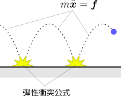
さて、もともと知りたかったのは、衝突を含むボールの運動
𝒙𝑡
である。実際に
𝒙𝑡
を計算するには、以下の手順に従えばよい（右図はその概略）。
初期値
まず、初期時刻
𝑡=0
において、初期値位置
𝒙
および初期速度
˙𝒙
を与える。これらが与えられれば、その後の運動が、ニュートンの運動法方程式により決まるのであった。
衝突するまで
衝突の瞬間（＝拘束条件
𝐺(𝒙𝑡)=0
が成り立つ時刻
𝑡
）まで、前章で述べたニュートンの運動方程式
𝑚¨𝒙=𝒇
を用いて計算を進める。
𝒇
は重力など、拘束力以外の力。外力という。
衝突の瞬間
ボールが壁に接触した状態になっているので、その衝突点
𝒙
において、弾性衝突公式(18)：（再掲）
˙𝒙out=[1−2ˆ∇𝐺(ˆ∇𝐺)T]˙𝒙in(19)
を使って反射速度
˙𝒙out
を計算する。その後、その
𝒙,˙𝒙out
を次の初期値として、ステップ1の計算に戻る。
予告壁に接触し続ける場合は、第7章の方法を使う
なお、初期値の取り方によっては、衝突にならず、壁に接触したまま壁に沿った運動になる。その場合は、衝突が一瞬で終わるという暗黙の仮定が成立せず、これまでの議論が使えない。実際、壁に沿った運動の場合、入射速度
˙𝒙in
の「壁面と垂直な方向成分」
(ˆ∇𝐺)T˙𝒙in
は
𝟎
なので、式(19)をそのまま使うと
˙𝒙out=˙𝒙in
となってしまい、壁が無いのと同じになってしまう。詳しくは後の第7章で扱うが、このような場合、拘束力を具体的に求めることができ、ニュートンの運動方程式を直接解いて
𝒙𝑡
が計算できる。
4.3.2例題1球面との衝突
半径
𝑅
の円または球の内部にボールを閉じ込めた場合を考える（右図）。
弾性衝突公式：式(20)
拘束条件
𝐺
およびその微分
∇𝐺
は、以下のようになる：（以下の【4.3-注1】の微分公式(21)を使う）
𝐺≡𝑅−|𝒙|≥0∇𝐺=𝑑𝐺𝑑𝒙T=−ˆ𝒙
これを弾性衝突公式(19)に代入すれば、反射速度
˙𝒙out
を求める公式が得られる：
˙𝒙out=(1−2ˆ𝒙ˆ𝒙T)˙𝒙in(20)
シミュレーション
これを用いて数値計算を行うと、右図のようになる。
【4.3-注1】 |𝒙| の微分公式
位置ベクトル
𝒙
の絶対値
|𝒙|
の微分は、以下のようになる：（
𝒙≠𝟎
）
𝑑𝑑𝒙|𝒙|=ˆ𝒙T(21)
幾何学的解約これは、幾何学的に考えれば自然である。それを確認するには、微小変位
𝛿𝒙
における
|𝒙|
の変化が、1次近似の定義により
𝛿|𝒙|≐𝑑|𝒙|𝑑𝒙𝛿𝒙=ˆ𝒙T𝛿𝒙
となることに着目すればよい。
𝛿𝒙
が円周方向を向く場合（
𝛿𝒙⟂𝒙
）には
𝛿|𝒙|=0
、動径方向を向く場合（
𝛿𝒙∥𝒙
）には
𝛿|𝒙|=±|𝛿𝒙|
となり、もっともらしい。
導出
微分の定義(17)を使えばよい。即ち、求める微分
𝑑|𝒙|𝑑𝒙
は、
𝛿|𝒙|
を1次近似したときの
𝛿𝒙
の係数である：
𝛿|𝒙|=𝛿√|𝒙|2∣
∣
∣
∣
∣1変数関数の1次近似：𝛿𝑓≐𝑑𝑓𝑑𝑋𝛿𝑋に 𝑓=√𝑋 と 𝑋=|𝒙|2 を代入する≐𝑑√|𝒙|2𝑑|𝒙|2𝛿|𝒙|2∣
∣
∣
∣微分公式：𝑑√𝑋𝑑𝑋=12√𝑋(=12|𝒙|)=12|𝒙|𝛿|𝒙|2∣
∣
∣
∣
∣
∣𝛿|𝒙|2≡|𝒙+𝛿𝒙|2−|𝒙|2=(𝒙+𝛿𝒙)T(𝒙+𝛿𝒙)−𝒙T𝒙=2𝒙T𝛿𝒙+𝛿𝒙T𝛿𝒙⏟≐0≐2𝒙T𝛿𝒙≐ˆ𝒙T𝛿𝒙◼
4.3.3例題2 𝑦=𝑓(𝑥) の形の床との衝突
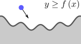
もう1つの例として、2次元空間において、右図のように
𝑦=𝑓(𝑥)
のグラフの形をした床との衝突を考える。
弾性衝突公式：式(22)
拘束条件
𝐺
およびその微分
∇𝐺
は、以下のようになる：（
𝑓′=𝑑𝑓𝑑𝑥
）
𝐺(𝑥,𝑦)≡𝑦−𝑓(𝑥)≥0∇𝐺=[𝜕𝑥𝐺𝜕𝑦𝐺]=[−𝑓′1]
これを弾性衝突公式(19)に代入すれば
˙𝒙out=(1−2𝑓′2+1[𝑓′2−𝑓′−𝑓′1])˙𝒙in(22)
となる。3次元の場合：
𝑧=𝑓(𝑥,𝑦)
の場合は、以下のようにとればよい：
𝐺(𝑥,𝑦,𝑧)≡𝑧−𝑓(𝑥,𝑦)≥0∇𝐺=⎡⎢
⎢⎣−𝜕𝑥𝑓−𝜕𝑦𝑓1⎤⎥
⎥⎦
（弾性衝突公式(19)に代入した結果はきれいにはならないので省略。）
シミュレーション
適当な関数を採用して数値計算を行うと右図のようになる（図は3次元の場合）。
参考衝突を含む運動は、誤差を増幅させる
ところで、衝突は、計算誤差を増大させる性質を持つ。というのも、衝突により、位置の微妙なずれが、運動方向のずれを生じさせるからである（床が湾曲している場合）。そのため、衝突を繰り返すとすぐに誤差が無視できなくなる。実際、上のシミュレーションでも、（計算のステップ幅
𝛿𝑡
が毎回異なる実装のため）時間が経つにつれて毎回全く異なる運動になる。このように、計算できくなってしまうのは理論や計算の欠陥のようにも見えるが、そうではなく、現実世界での再現困難性を反映しているのである。実際、湾曲した床にボールを落として跳ねさせる実験を行うと、同じところから落としたつもりでも、「微妙な初期状態のずれ」や「空気の揺らぎ」などのせいで、数回跳ねると毎回違う運動になってしまう。この性質が、理論にも正しく反映されているわけである。